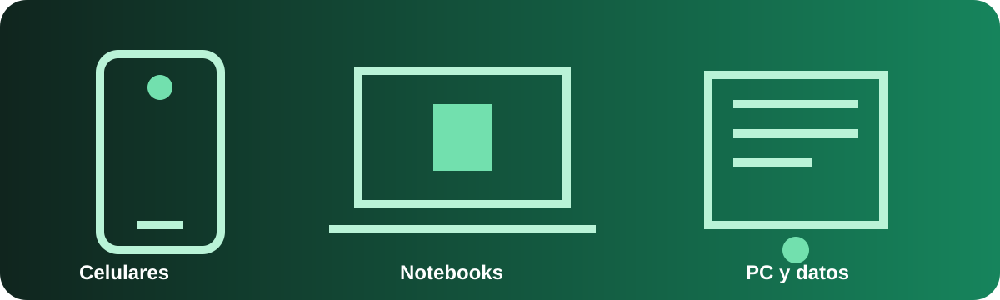

1
Recepción coordinada
Lo acercás con turno, coordinamos retiro o evaluamos si puede resolverse a domicilio.
Celulares, tablets, notebooks y PC. Elegí cómo querés empezar: orientarte con el diagnóstico, pedir directamente una reparación o consultar una orden que ya está en marcha.
Respondé unas preguntas simples. La orientación es preliminar: el diagnóstico final se confirma al revisar físicamente el equipo.
Para reparaciones con referencias confiables te mostramos un rango actualizado. Si el repuesto depende demasiado de la variante o no tenemos suficientes referencias, preferimos pedirte el modelo exacto antes que inventar un precio.
La solicitud entra directamente al panel de Nextfuture. Después definimos por WhatsApp si conviene recepción con turno, retiro coordinado, atención a domicilio o resolución remota.
Antes de reparar confirmamos la falla, el presupuesto y el plazo. No se cambia un repuesto importante sin tu aprobación.
Lo acercás con turno, coordinamos retiro o evaluamos si puede resolverse a domicilio.
Revisamos el equipo y confirmamos la causa probable de la falla.
Recibís el presupuesto y podés aceptarlo o rechazarlo desde el seguimiento.
Seguís repuesto, reparación, pruebas y retiro o entrega desde el mismo código.
Guías simples y seguras para celulares, tablets, notebooks y PC. Abrí cada consejo para ver qué conviene hacer y qué evitar.

Evitá el calor excesivo y no dejes el equipo al sol o dentro del auto. Usá cargadores y cables en buen estado. Si la batería se hincha, apaga el equipo y no la presiones ni la perfores.
Apagalo, desconectalo y no intentes cargarlo. No uses arroz, secador ni calor directo: pueden empeorar el daño. Si es posible, coordiná una revisión cuanto antes.
Probá otro cable y cargador compatibles y revisá si hay suciedad visible. No introduzcas agujas ni objetos metálicos en USB-C o Lightning. Si el conector se mueve o carga sólo en cierta posición, conviene revisarlo.
Una buena funda ayuda más que depender sólo del vidrio templado. Evitá llevar el teléfono donde pueda doblarse o recibir presión. Una pantalla rota puede seguir funcionando, pero pierde protección frente a humedad y suciedad.
Usala sobre superficies firmes que no tapen las entradas de aire. Cama, sillón y mantas favorecen la acumulación de temperatura. Ventiladores muy ruidosos o temperatura elevada constante justifican una limpieza preventiva.
Mantené libres las rejillas y evitá acumular polvo. Si vas a limpiar internamente, desconectá el equipo. Reinicios, temperaturas altas o ventiladores al máximo pueden indicar que necesita mantenimiento.
Guardá fotos y documentos importantes en más de un lugar. Si un disco hace ruidos, desaparece, se vuelve extremadamente lento o da errores, evitá seguir forzándolo y consultá antes de perder información.
No compartas códigos de verificación. Activá verificación en dos pasos y desconfiá de mensajes que exijan pagos o datos con urgencia. Antes de instalar programas o APK desconocidos, verificá su procedencia.
Revisá espacio libre, programas que arrancan automáticamente y actualizaciones pendientes. En equipos con disco mecánico, pasar a SSD puede producir una mejora mucho mayor que reinstalar Windows sin cambiar hardware.
Si el equipo todavía funciona, hacé backup. Retirá SIM y memoria cuando no sean necesarias para la prueba. No envíes contraseñas por mensaje: si necesitamos un acceso para comprobar una falla, lo coordinamos.
Probá pantalla, cámaras, carga, Wi-Fi, Bluetooth, audio, batería y botones. Verificá que el equipo no tenga bloqueos de cuenta y compará el costo de posibles reparaciones con su valor real.
El arroz no repara un equipo mojado; cerrar aplicaciones compulsivamente no siempre ahorra batería; y formatear no arregla fallas físicas. Un buen diagnóstico evita gastar en soluciones que no atacan la causa.
Usá el código que te entregamos y los últimos 4 dígitos del teléfono registrado.